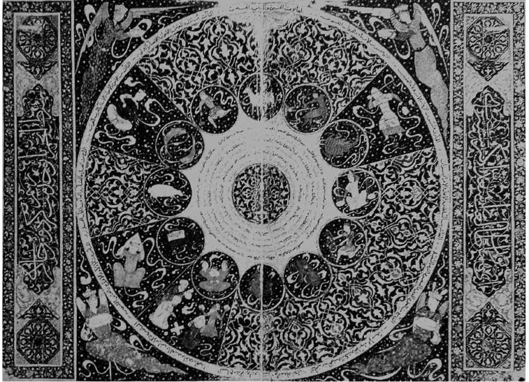

由于蒙古人人数极少，他们不断地招募大批突厥人入伍。然后，随着蒙古帝国的分裂，这些穆斯林突厥人迅速地崭露头角，就如同蒙古人入侵前他们在哈里发王朝中那样。一批批军事冒险家，这时在为控制欧亚大陆中部平原而进行的斗争中得势或垮台。其中最著名的是帖木儿，欧洲人称为泰摩兰。他于1370年占领撒马尔罕，由此向各处出击：首先消灭了波斯和美索不达米亚的伊儿汗国，然后打败了俄罗斯的金帐汗国和小亚细亚的奥斯曼土耳其人；甚至还侵入印度，洗劫了德里。他决心将首都撒马尔罕建成世界上最好的城市，因此，每次战斗之后，他都要送回满载战利品的车队，以及工匠、艺术家、占星术家和文人。鼎盛时期，帖木儿帝国的疆土从地中海延伸到中国；他在1405年去世之前，正准备入侵中国。他去世之后，其帝国的分裂比蒙古帝国还要快。
继帖木儿之后，最显著的发展是穆斯林突厥人势力在印度和拜占庭的扩展。13世纪，在蒙古人的威胁所构成的压力下，德里的突厥人苏丹只加强自己在印度北部的地位。14世纪，随着这一威胁的消除，他们开始向南扩张，抵达吉斯德纳河，占领了印度半岛三分之二的领土。接着，在帖木儿的侵袭结束后的一个时期里，印度北部和中部出现了几个小国，这些小国由突厥人统治，没有一个有足够的力量来恢复德里苏丹的统治。同时，伊斯兰教势力对印度大部分地区的扩张，引起印度教教徒的反抗。印度教教徒建立了印度教大国维查耶那伽尔，其领土包括吉斯德纳河以南整个印度地区。这就是16世纪，当另一个穆斯林突厥人王朝——莫卧儿帝国——从外部强行统一印度半岛时，这里所存在的分裂状况。

图84 帖木儿王朝天宫图。
其时，在中东，奥斯曼土耳其人在损害拜占庭的情况下，使伊斯兰教的疆土不断扩展。这些来自中亚的入侵者，乘塞尔柱帝国衰微之时，进入该帝国，在小亚细亚的西北角定居下来，那里距分隔欧亚两洲、具有战略意义的海峡不到50英里。1299年，这些土耳其人的首领奥斯曼摆脱塞尔柱君主的统治，宣布独立，并将他的国家从地位低下的小国，发展成为以其名命名的、伟大的奥斯曼帝国。
土耳其人征服的第一步，是占领残留在小亚细亚的拜占庭领土。由于基督教农民对拜占庭当局的不满，以及从中东各地蜂拥而来、同基督教异教徒作战的伊斯兰教武士的大力支援，1340年，这一征服宣告完成。接着，土耳其人渡过达达尼尔海峡，首次插足欧洲，于1354年在加利波利建立一个要塞。他们选择了一个几乎没有比这更好的时机进军欧洲。这时，敌对的基督教教会之间的冲突，拜占庭、塞尔维亚和保加利亚诸国间的对立，将巴尔干半岛弄得四分五裂；而且这些国家均处于衰落时期。另外，同小亚细亚的农民一样，巴尔干半岛的基督教农民也对统治者不满。西方基督教世界已经分裂，它即使愿意，也无法援助巴尔干半岛各国；何况，天主教教徒和东正教教徒之间早已存在着隔阂，他们并不愿意予以援助。这便为奥斯曼土耳其人扫清了道路，事实上他们也充分利用了这一大好时机。
1362年，土耳其人占领阿得里安堡，1384年，夺取索非亚，从而包围了君士坦丁堡。然后，1402年，帖木儿打败并俘虏了他们的苏丹，随后几十年，他们被迫转移。但是，帖木儿的统治只是昙花一现，1405年他的去世使奥斯曼土耳其人获得自由，得以重建他们的统治，继续对外侵略。1453年，奥斯曼土耳其人终于攻陷君士坦丁堡，成为多瑙河以南、除威尼斯控制的几座沿海堡垒以外的整个巴尔干半岛的主人（详见第十二章第四节）。